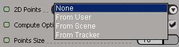
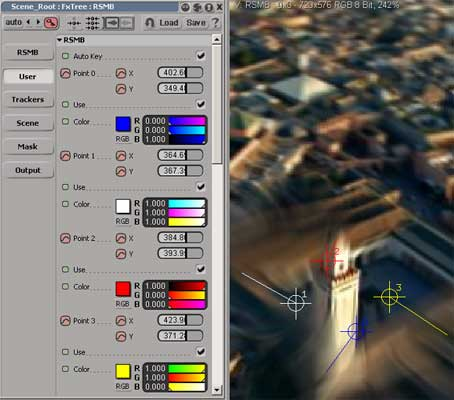
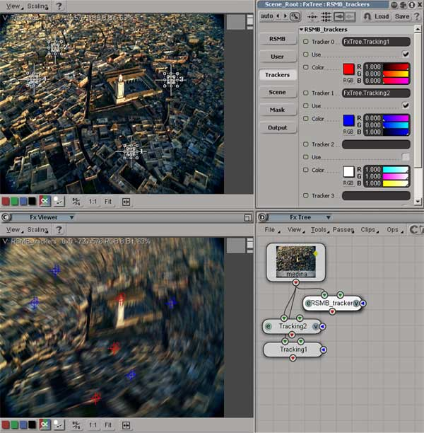
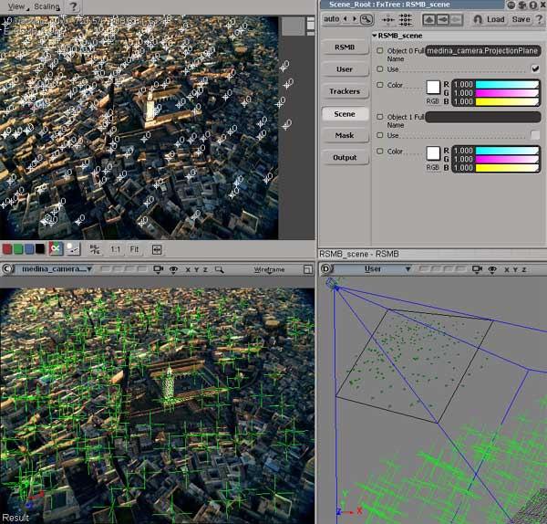

Introduction
It is often useful to guide RSMB's motion estimation.
This section describes how to guide RSMB motion estimation using
RSMB's Track Point settings.
IMPORTANT: RSMB's Track Point settings tell RSMB which pixels correspond
from frame-to-frame in the source image sequence.
Note that a particular Track Point is used to guide the motion estimation when:
- The Track Point's Use menu is set (you can animate that). As such, when you don't need a tracking point any longer, set the Use menu for the point to None.
- The Track Point is within the image boundary for the frame being blurred. If a given Track Point is off the image, then that Track Point is not used.
An example: Let's say that we want to motion blur based on the motion between the two frames in the following figure:
Source Image 1
Source Image 2.
Note that the camera has moved forward
toward the
rocks and has slightly rotated.
To create a motion blurred frame from tracking the two frames above we get the following result:
Unsatisfactory motion blur because:
1) the top of the frame barely moves at all
while the lower part
of the frame moves a lot;
2) each rock looks very similar to other rocks and
3) much of the scene towards the bottom
moves offscreen which can
confuse the tracker.
We set 3 tracking points and keyframe corresponding positions at the two source times.(see below how to do that).
3 Tracking Points used
and positioned for the first source frame.
Same 3 Tracking Points animated
at the second frame to correspond
to the same features in the first
frame, at the first source time.
Note that the red and magenta tracking
points remain close to where they were
in the first frame, while the green point
moves significantly to the left and down.
Motion blurred sequence
when using the 3 Track Points as shown above.
Using points in RSMB for Softimage|XSI
these points can be given to RSMB via several methods :

- From User : inside the ufo , user has access to 12 user points that can be keyframed
- From Tracker : import trackers from the fxtree tracking nodes
- From Scene : import points from the 3d scene
user tracking points
the user has access to 12 points which can be keyframed to help RSMBpro defining the motion

you can assign a different color to each point.
each point coordinates can be keyframed over time.
using tracking nodes
points can be imported from xsi tracking nodes .
you can use 4 tracking node simultaneously .
Each tracking node has 4 points : 4*4 = 16 points can be sent
to RSMBpro to help defining the motion

bottom view : RSMBpro display of the transmetted points
top view : fxtree tracking node
you can assign a different color to each point.
getting 3D points from the scene
you can use nulls to define points
to help RSMBpro estimating the motion.
the 3d positions are projected in 2D using a
ProjectionPlane attached to any
3D camera in the scene.
once projected in 2d , the points are transmitted to RSMBpro

top view : RSMB display of the transmetted points
bottom view : 3d camera view
right bottom : the projection plane
you can assign a different color to each point group